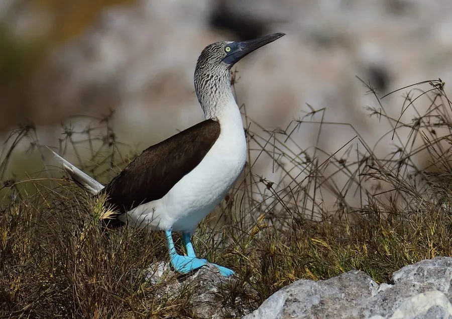

鸟类 · 动物界
蓝脚鲣鸟 Sula nebouxii

因一双亮蓝色大脚而得名的海鸟，雄鸟在求偶时高抬双脚跳起滑稽舞步，是加拉帕戈斯群岛的明星物种。
- 分类
- 门脊索动物门纲鸟纲目鲣鸟目科鲣鸟科属鲣鸟属
- 栖息环境
- 热带海洋及近海岛屿，多在岩石海岸和沙滩上集群营巢
- 地理分布
- 太平洋东岸，从墨西哥西部至厄瓜多尔，加拉帕戈斯群岛为主要繁殖地
- 保护级别
- IUCN 无危（LC）；非中国分布物种
物种志
蓝脚鲣鸟体长 76–84 cm，体重 1.2–1.8 kg，翼展 150–160 cm。它的羽毛以褐色和白色为主，颈、胸和腹部洁白，翅膀和背部深褐，头部略带淡黄色，喙呈蓝灰色，最醒目的是那双亮蓝色的脚蹼。脚的颜色来自食物中的类胡萝卜素，越健康、营养越好的个体，脚的颜色越鲜艳。
蓝脚鲣鸟分布于太平洋东岸，从墨西哥西部到厄瓜多尔，加拉帕戈斯群岛是最著名的繁殖地。它们主要吃沙丁鱼和鳀鱼，会从数十米高空俯冲入水捕鱼，入水时的冲击力靠头部的气囊缓冲。繁殖期雄鸟会抬起蓝色的双脚，左右交替踏步向雌鸟炫耀；每窝产卵 1–3 枚，孵化约 41 天。由于食物供应受海洋气候影响，其种群数量波动较大，目前被列为无危物种。
形态与习性
- 食性沙丁鱼、鳀鱼等小型鱼类
- 体长76–84 cm
- 体重1.2–1.8 kg
- 翼展150–160 cm
- 潜水从数十米高空俯冲入水，靠头部气囊缓冲
- 繁殖每窝 1–3 枚卵，孵化约 41 天
- 寿命野外约 15–20 年
趣味知识
- 蓝脚鲣鸟的蓝色大脚颜色来自食物中的类胡萝卜素，吃得越好颜色越鲜。
- 雄鸟求偶时会抬起双脚左右交替踏步，跳起滑稽的舞蹈。
- 它们能从数十米高空俯冲入水，靠头部气囊缓冲冲击。
- 蓝脚鲣鸟常一次孵出两只以上雏鸟，但食物不足时往往只有最强壮的存活。